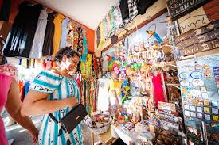
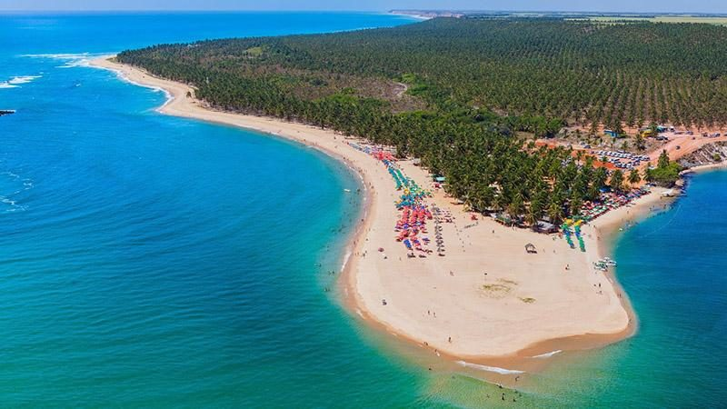
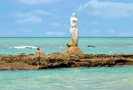
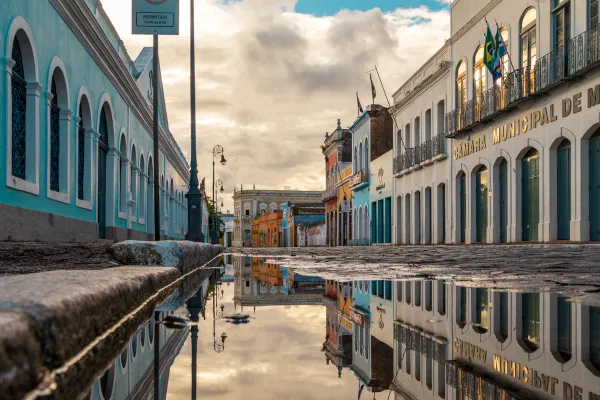

A Feira do Artesanato de Maceió, localizada na capital de Alagoas, é um espaço vibrante que celebra a cultura e a criatividade local. Nela, você pode encontrar uma variedade de produtos artesanais, como rendas, cerâmicas, bijuterias, e objetos de decoração, todos feitos por talentosos artesãos da região. A feira não só oferece uma ótima oportunidade para adquirir lembranças únicas, mas também para apreciar a rica tradição artesanal de Alagoas. Além disso, o ambiente é acolhedor e muitas vezes conta com apresentações culturais, tornando a visita uma experiência ainda mais especial.
A Praia do Gunga é uma das mais famosas e deslumbrantes do estado de Alagoas, localizada a cerca de 30 km de Maceió. Conhecida por suas águas cristalinas e areias brancas, a praia é cercada por falésias coloridas e coqueirais, criando uma paisagem de tirar o fôlego. É um destino popular tanto para turistas quanto para moradores locais, oferecendo diversas atividades, como passeios de buggy, caiaque e stand-up paddle. Além da beleza natural, a Praia do Gunga conta com quiosques e restaurantes que servem deliciosos pratos da culinária local, especialmente frutos do mar. A atmosfera é relaxante, ideal para quem busca um dia de sol e diversão.
A Praia da Sereia é uma encantadora praia localizada em Maceió, Alagoas, conhecida por suas águas calmas e cristalinas, que a tornam ideal para banhos e relaxamento. O nome "Praia da Sereia" vem de uma famosa escultura de uma sereia que se tornou um símbolo da praia e atrai muitos visitantes para fotos. A praia é cercada por uma vegetação exuberante e possui uma infraestrutura que inclui quiosques e restaurantes, onde é possível saborear pratos típicos da região, como frutos do mar. A atmosfera é tranquila e familiar, perfeita para quem busca um dia de descanso à beira-mar.
O mercado de artesanato é um setor vibrante e diversificado, que abrange uma ampla gama de produtos feitos à mão, desde itens decorativos até acessórios e roupas. Esse mercado tem crescido nos últimos anos, impulsionado pelo aumento do interesse por produtos únicos e personalizados, além da valorização do trabalho artesanal. Os artesãos muitas vezes utilizam técnicas tradicionais e materiais locais, o que confere um valor cultural e histórico aos seus produtos. Além disso, o artesanato pode ser uma forma de expressão artística e uma maneira de sustentar comunidades locais.
